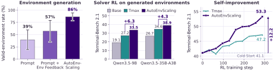
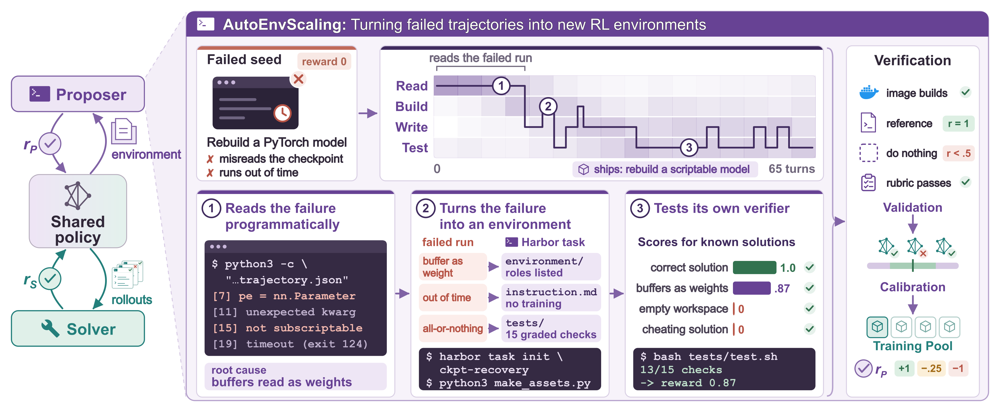

Overview
Terminal agents solve tasks in software engineering and scientific research by running commands in a terminal. Training them with reinforcement learning needs diverse, verifiable environments, and researchers still design most of these by hand, so the supply grows only as fast as researchers can work.
AutoEnvScaling treats environment design as a terminal task. A proposer agent reads the rollouts of the solver being trained, then builds, runs, and fixes a new environment inside a sandbox. The host admits the environment only if it validates and suits the current solver, and the solver's new rollouts guide the next round. In a terminal, eight frontier proposers produce valid environments up to 25× as often as when they write the task in one response, and training Qwen3.5-35B-A3B on environments from GPT-5.6-sol beats the matched Tmax pool by 4.3 points on Terminal-Bench 2.1.
The broader goal is recursive self-improvement (RSI). Because building an environment and solving one are both terminal tasks, one model can co-evolve in both roles. Acting as both proposer and solver, Qwen3.6-35B-A3B rises from 41.1 to 53.3 on Terminal-Bench 2.1 and from 1.6 to 3.2 on Terminal-Bench 4.0.
AutoEnvScaling: Automating the Data Flywheel with Terminal Agents

The proposer reads the solver's failed run and writes a complete Harbor task: instruction, container image, reference solution, and tests. The host admits it only if it passes two checks:
- Validation: the reference solution scores 1 and an empty one below 0.5, no 13-gram overlap with held-out tasks, and
harbor checkpasses. - Calibration: the current solver sometimes solves it (mean reward in [0.25, 0.75]).
The proposer earns 1 for an admitted task, −0.25 if calibration fails, and −1 if validation fails. The solver earns the fraction of tests it passes.
Experiments
Does Environment Design Benefit from a Terminal?
Valid-environment rate of eight frontier proposers. Prompt writes the task in one response; Prompt + Env Feedback also sees build and test errors; AutoEnvScaling works in a terminal.
Environments built in a terminal are richer and harder: more data files, longer solver trajectories, and a lower solver pass rate.
Results
AutoEnvScaling outperforms static environment pools. Held-out Terminal-Bench 2.1 (avg@5) after RL on environments from a frontier proposer, against the static Tmax pool at matched training steps (left).
Recursive self-improvement. Qwen3.6-35B-A3B acts as both proposer and solver: it builds environments for itself, trains on them, and improves in both roles. All runs start from the same Cold-Start checkpoint (right).
Training dynamics. The curriculum stays at the solver's level: AutoEnvScaling keeps 3.1× as many rollout groups useful for training as Tmax, so collecting rollouts for each update takes 42% less time.
Beyond Task Performance: Learning Behavior
AutoEnvScaling can also write environments that teach a behavior. On HiL-Bench, instructions leave out information the agent needs, and it must ask for it with an ask_human tool. We train Qwen3.6-35B-A3B on software engineering tasks and evaluate on held-out HiL-Bench tasks.
Qualitative Study for AutoEnvScaling
Every episode below starts from a Terminal-Bench run that the solver failed. Pick a case and an author, then step through what the proposer read, built, wrote, and tested.
Loading episodes…
The same failed run, handed to GPT-5.6-sol, Claude Opus 5, and the Cold-Start Qwen3.6-35B-A3B that we train for recursive self-improvement. Each column shows how the proposer spent its turns, three moments from its episode, and the environment it shipped.
Loading cases…
Cross-Domain Environment Generation
Harbor tasks written by proposers: terminal environments from the failure study, and environments in six other domains. Open one to read its instruction, image, reference solution, and tests.
Loading environments…
Shown as the models wrote them, except that machine paths, internal hostnames and addresses, and anything shaped like a credential are replaced (<path>, <ip>, <redacted>), including fake secrets that tasks plant on purpose. Files copied from Terminal-Bench seed tasks are not shown.
Citation
@misc{yu2026autoenvscaling,
title={AutoEnvScaling: Automating the Data Flywheel with Terminal Agents},
author={Simon Yu and Baolin Peng and Bo Liu and Zhengyan Shi and Zhaoyang Wang and Hao Cheng and Qianhui Wu and Wenlin Yao and Natasha Jaques and Weiyan Shi and Jianfeng Gao},
year={2026},
note={arXiv preprint, to appear}
}